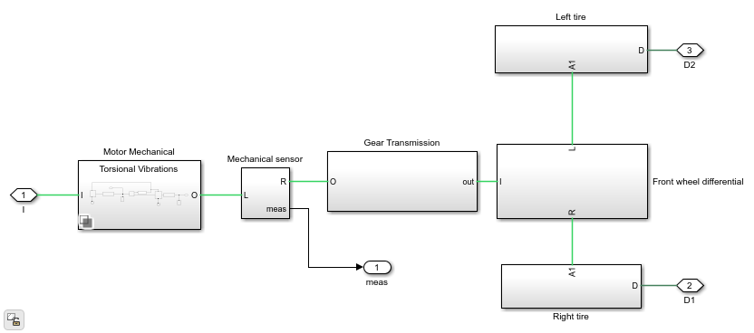

FlexibleDriveline
Flexible driveline with gear backlash, torsional shaft compliance, and motor bearing dynamics for NVH analysis.
Contents
Overview
The FlexibleDriveline block extends the standard Driveline with flexible shafts, gear backlash, bearing friction, and motor torsional vibration subsystems. It captures high-frequency torsional dynamics relevant to Noise, Vibration, and Harshness (NVH) studies such as launch jerk minimization and frequency order map generation.
The model includes a two-stage gear transmission with counter shaft, a front wheel differential, left and right tire models, and a motor mechanical subsystem with torsional vibration modes.
Model: FlexibleDriveline.slx
Parameters: FlexibleDriveLineTestHarnessParams.m
Thermal Coupling: None
Open Model
open_system('FlexibleDriveline')

Ports
Physical Ports — Input
| Port | Domain | Description |
|---|---|---|
| I | Mechanical rotational | Motor shaft input |
Physical Ports — Output
| Port | Domain | Description |
|---|---|---|
| D1 | Mechanical rotational | Left drive shaft output |
| D2 | Mechanical rotational | Right drive shaft output |
Output Bus — meas
Measurement bus containing sensor signals from the driveline.
Subsystems
- Motor Mechanical — Motor shaft with bearings and torsional vibration modes
- Gear Transmission — Two-stage gear ratio with flexible counter shafts, gear backlash, and radial load sensors
- Front wheel differential — Final drive with configurable gear ratio
- Left tire / Right tire — Tire models with slip dynamics
- Mechanical sensor — Speed and torque measurement
Parameters
| Name | Default | Description |
|---|---|---|
| Motor-to-CS gear ratio | 2.5 | Motor pinion to counter shaft gear ratio |
| CS-to-MS gear ratio | 1.0 | Counter shaft to main shaft gear ratio |
| Overall gear ratio | 7.5 | Total gear reduction (motor to wheel) |
| Gear backlash | 1e−3 rad | Backlash at each gear mesh |
| Gear mesh stiffness | 1e6 N·m/rad | Contact stiffness at gear mesh |
| Counter shaft torsional stiffness | 2e5 N·m/rad | Torsional stiffness of flexible shaft segments |
| Tire rolling radius | 0.33 m | Effective rolling radius of the tires |
| Vehicle mass | 1000 kg | Total vehicle mass |
See FlexibleDriveLineTestHarnessParams.m for a complete list of parameters.
Workflows
The FlexibleDriveline block is used in driveline NVH analysis workflows: